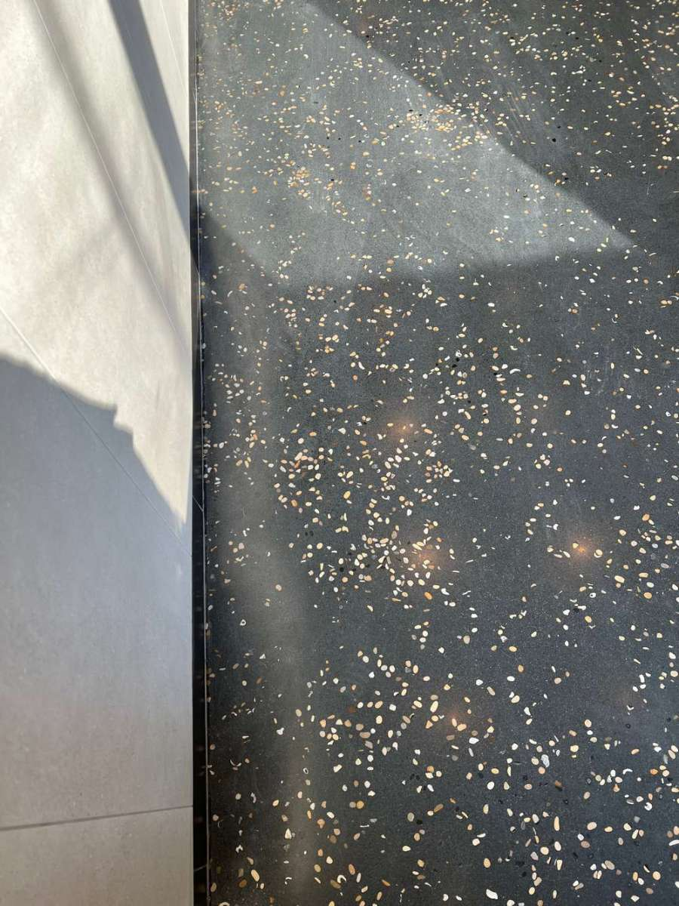
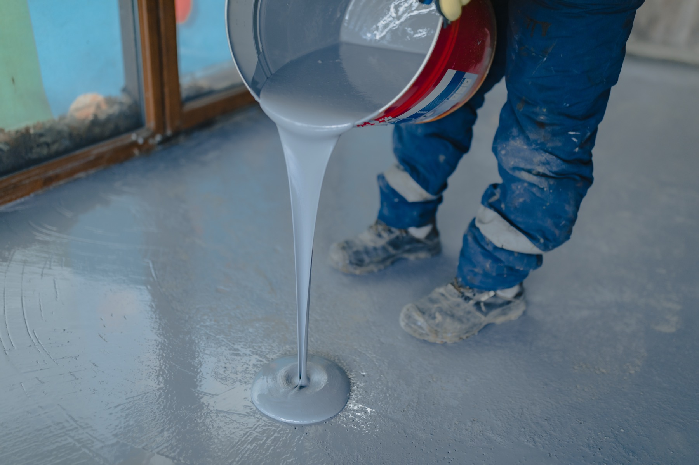

TrendsTerrazzo in Modern Interiors: A Timeless Material Reimagined
From ancient Roman origins to cutting-edge Israeli design — how modern terrazzo is transforming residential and commercial spaces.
Read ArticleInsights & Technical Guides
Expert knowledge on industrial and decorative flooring. Installation techniques, material science, maintenance, and trends.
Design signals, client demand shifts, and the finishes shaping the next wave of floor specification.

TrendsFrom ancient Roman origins to cutting-edge Israeli design — how modern terrazzo is transforming residential and commercial spaces.
Read Article Trends
TrendsSystem primers for resin chemistry, screeds, and build-ups that determine how a floor performs in service.
 Material Guide
Material GuideComprehensive analysis of chemical resistance, mechanical properties, and lifecycle costs.
Read Article Material Guide
Material GuideMoisture control, crack prep, cure windows, and site execution details that prevent expensive failures later.
Why 90% of coating failures trace back to moisture.
Read Article Installation
Installation Installation
InstallationCleaning chemistry, inspection rhythms, and recoat timing before everyday wear becomes a system failure.
Maintenance
MaintenanceКакие из наших систем совместимы с водяным и электрическим тёплым полом. Максимальные температуры, график первого нагрева, риски трещин.
Read ArticleЧто должно быть в тендере, чтобы подрядчик не «дешевил» там, где не видно. Основание, нагрузки, химия, IL-специфика, приёмка, гарантия.
Read ArticleTrade-offs in thickness, service life, repair strategy, and cost before you lock a system into the specification.
ComparisonA detailed side-by-side comparison of aesthetics, durability, cost, and best-use scenarios for two popular seamless flooring systems.
Read Article Comparison
ComparisonUnderstanding the technical differences that matter.
Read ArticleFloor.DSGN Encyclopedia
Detailed engineering notes on concrete diagnostics, repair, waterproofing and polymer systems. ICRI/ACI/EN standards, with real Israeli site cases.
Open Encyclopedia →